C++ STL快速入门
在数月之前的机试中第一次体验到STL的威力，因为自己本来一直在用C语言做开发，很多数据结构都是自己造的，比如链表、队列等，第一次接触C++ STL后发现这些数据结构都已经给我提供好了，我直接拿去调用就好了，真是超级方便。最近的项目中也遇到了STL一些容器，所以现在自己好好总结一下STL中一些最常用的容器的使用方法，方便自己日后查阅。
C++ STL中最基本以及最常用的类或容器无非就是以下几个：
- string
- vector
- set
- list
- map
下面就依次介绍它们，并给出一些最常见的最实用的使用方法，做到快速入门。
string
首先看看我们C语言一般怎么使用字符串的
char* s1 = "Hello SYSU!"; //创建指针指向字符串常量，这段字符串我们是不能修改的
//想要创建 可以修改的字符串，我们可以使用数组分配空间
char s2[20] = "Hello SYSU!";
//或者这样
char s3[] = "Hello SYSU!";
//当然我们也可以动态分配内存
char* s4 = (char*)malloc(20）;
gets(s4);
C++ 标准库中的string表示可变长的字符串，它在头文件string里面。
#include <string>用string初始化字符串分两类：用“=”号就是拷贝初始化，否则就是直接初始化。
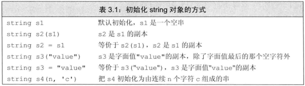
string s1;//初始化字符串，空字符串
string s2 = s1; //拷贝初始化，深拷贝字符串
string s3 = "I am Yasuo"; //直接初始化，s3存了字符串
string s4(10, 'a'); //s4存的字符串是aaaaaaaaaa
string s5(s4); //拷贝初始化，深拷贝字符串
string s6("I am Ali"); //直接初始化
string s7 = string(6, 'c'); //拷贝初始化，cccccc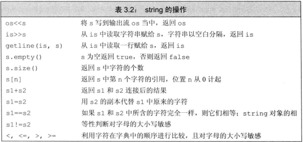
#include <iostream>
#include <string>
using namespace std;
int main()
{
string s1;//初始化字符串，空字符串
string s2 = s1; //拷贝初始化，深拷贝字符串
string s3 = "I am Yasuo"; //直接初始化，s3存了字符串
string s4(10, 'a'); //s4存的字符串是aaaaaaaaaa
string s5(s4); //拷贝初始化，深拷贝字符串
string s6("I am Ali"); //直接初始化
string s7 = string(6, 'c'); //拷贝初始化，cccccc
//string的各种操作
string s8 = s3 + s6;//将两个字符串合并成一个
s3 = s6;//用一个字符串来替代另一个字符串的对用元素
cin >> s1;
cout << s1 << endl;
cout << s2 << endl;
cout << s3 << endl;
cout << s4 << endl;
cout << s5 << endl;
cout << s6 << endl;
cout << s7 << endl;
cout << s8 << endl;
cout << "s7 size = " << s7.size() << endl; //字符串长度，不包括结束符
cout << (s2.empty() ? "This string is empty" : "This string is not empty") << endl;;
system("pause");
return 0;
}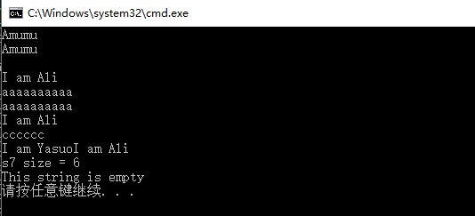
string的IO操作
使用cin读入字符串时，遇到空白就停止读取。比如程序输入的是
" Hello World"那么我们得到的字符串将是"Hello"，前面的空白没了，后面的world也读不出来。
如果我们想把整个hello world读进来怎么办？那就这样做
cin>>s1>>s2;hello存在s1里，world存在s2里了。
有时我们想把一个句子存下来，又不想像上面那样创建多个string来存储单词，怎么办？
那就是用getline来获取一整行内容。
string str;
getline(cin, str);
cout << str << endl;当把string对象和字符面值及字符串面值混在一条语句中使用时，必须确保+的两侧的运算对象至少有一个是string
string s1 = s2 + ", "; //正确
string s3 = "s " + ", "; //错误
string s4 = "hello" + ", " + s1; //错误
string s5 = s1 + "hello " + ", "; //改一下顺序，s1放前头，正确了，注意理解=号右边的运算顺序处理string中的字符
访问字符串的每个字符
for (int i = 0; i < s3.size(); i++)
{
cout << s3[i] << endl;
s3[i] = 's';
}在C语言中我都是用下标或者指针来访问数组元素，而在C++里，有个新奇的东西叫做迭代器iterator，我们可以使用它来访问容器元素。
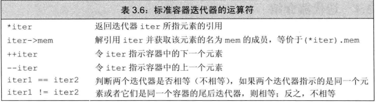
string str("hi sysu");
for (string::iterator it = str.begin(); it != str.end(); it++)
{
cout << *it << endl;
}我们也可以是使用const_iterator使得访问元素时是能读不能写，这跟常量指针意思差不多。
string str2("hi sysu");
for (string::const_iterator it = str2.begin(); it != str2.end(); it++)
{
cout << *it << endl;
*it = 'l'; //这是错误的，不能写
}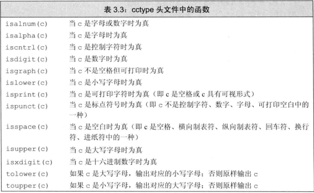
string还有一些很好用的函数，比如找子串
string sq("heoolo sdaa ss");
cout << s.find("aa", 0) << endl; //返回的是子串位置。第二个参数是查找的起始位置，如果找不到，就返回string::npos
if (s.find("aa1", 0) == string::npos)
{
cout << "找不到该子串！" << endl;
}vector
C++ STL中的verctor好比是C语言中的数组，但是vector又具有数组没有的一些高级功能。与数组相比，vector就是一个可以不用再初始化就必须制定大小的边长数组，当然了，它还有许多高级功能。
要想用vector首先得包含头文件vector。
#include <vector>怎么初始化？
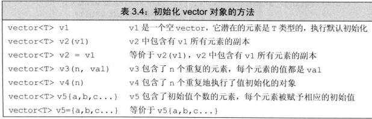
如果vector的元素类型是int，默认初始化为0；如果vector元素类型为string，则默认初始化为空字符串。
vector<int> v1;
vector<father> v2;
vector<string> v3;
vector<vector<int> >; //注意空格。这里相当于二维数组int a[n][n];
vector<int> v5 = { 1,2,3,4,5 }; //列表初始化,注意使用的是花括号
vector<string> v6 = { "hi","my","name","is","lee" };
vector<int> v7(5, -1); //初始化为-1,-1,-1,-1,-1。第一个参数是数目，第二个参数是要初始化的值
vector<string> v8(3, "hi");
vector<int> v9(10); //默认初始化为0
vector<int> v10(4); //默认初始化为空字符串如何向vector添加元素？
请使用push_back加入元素，并且这个元素是被加在数组尾部的。
for (int i = 0; i < 20; i++)
{
v1.push_back(i);
}vector其他的操作
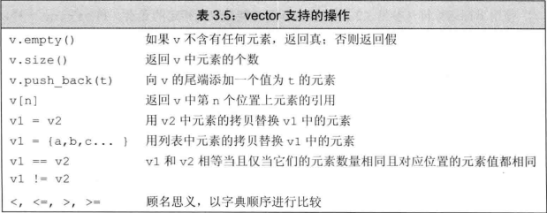
访问和操作vector中的每个元素
for (int i = 0; i < v1.size(); i++)
{
cout << v1[i] << endl;
v1[i] = 100;
cout << v1[i] << endl;
}注意：只能对已存在的元素进行赋值或者修改操作，如果是要加入新元素，务必使用push_back。push_back的作用有两个：告诉编译器为新元素开辟空间、将新元素存入新空间里。
比如下面的代码是错误的，但是编译器不会报错，就像是数组越界。
vector<int> vec;
vec[0] = 1; //错误！当然我们也可以选择使用迭代器来访问元素
vector<string> v6 = { "hi","my","name","is","lee" };
for (vector<string>::iterator iter = v6.begin(); iter != v6.end(); iter++)
{
cout << *iter << endl;
//下面两种方法都行
cout << (*iter).empty() << endl;
cout << iter->empty() << endl;
}上面是正向迭代，如果我们想从后往前迭代该如何操作？
使用反向迭代器
for (vector<string>::reverse_iterator iter = v6.rbegin(); iter != v6.rend(); iter++)
{
cout << *iter << endl;
}vector最常用的增删操作
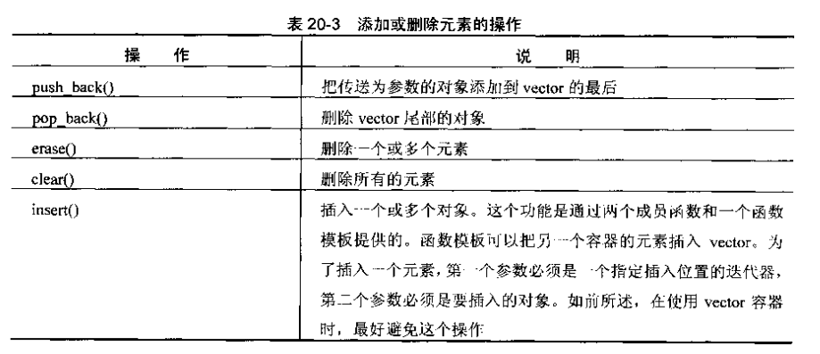
#include <iostream>
#include <vector>
#include <string>
using namespace std;
template <typename T>
void showvector(vector<T> v)
{
for (vector<T>::iterator it = v.begin(); it != v.end(); it++)
{
cout << *it;
}
cout << endl;
}
int main()
{
vector<string> v6 = { "hi","my","name","is","lee" };
v6.resize(3); //重新调整vector容量大小
showvector(v6);
vector<int> v5 = { 1,2,3,4,5 }; //列表初始化,注意使用的是花括号
cout << v5.front() << endl; //访问第一个元素
cout << v5.back() << endl; //访问最后一个元素
showvector(v5);
v5.pop_back(); //删除最后一个元素
showvector(v5);
v5.push_back(6); //加入一个元素并把它放在最后
showvector(v5);
v5.insert(v5.begin()+1,9); //在第二个位置插入新元素
showvector(v5);
v5.erase(v5.begin() + 3); //删除第四个元素
showvector(v5);
v5.insert(v5.begin() + 1, 7,8); //连续插入7个8
showvector(v5);
v5.clear(); //清除所有内容
showvector(v5);
system("pause");
return 0;
} 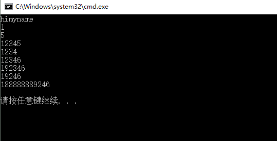
注意：虽然vertor对象可以动态增长，但是也或有一点副作用：已知的一个限制就是不能再范围for循环中向vector对象添加元素。另外一个限制就是任何一种可能改变vector对象容量的操作，不如push_back，都会使该迭代器失效。
总而言之就是：但凡使用了迭代器的循环体，都不要向迭代器所属的容器添加元素！
C++中push_back和insert两个有什么区别?
顾名思义push_back把元素插入容器末尾，insert把元素插入任何你指定的位置。
不过push_back速度一般比insert快。如果能用push_back尽量先用push_back。
set
set跟vector差不多，它跟vector的唯一区别就是，set里面的元素是有序的且唯一的，只要你往set里添加元素，它就会自动排序，而且，如果你添加的元素set里面本来就存在，那么这次添加操作就不执行。要想用set先加个头文件set。
#include <set>
#include <iostream>
#include <set>
#include <string>
using namespace std;
template <typename T>
void showset(set<T> v)
{
for (set<T>::iterator it = v.begin(); it != v.end(); it++)
{
cout << *it;
}
cout << endl;
}
int main()
{
set<int> s1{9,8,1,2,3,4,5,5,5,6,7,7 }; //自动排序，从小到大,剔除相同项
showset(s1);
set<string> s2{ "hello","sysy","school","hello" }; //字典序排序
showset(s2);
s1.insert(9); //有这个值了，do nothing
showset(s1);
s2.insert("aaa"); //没有这个字符串，添加并且排序
showset(s2);
system("pause");
return 0;
} 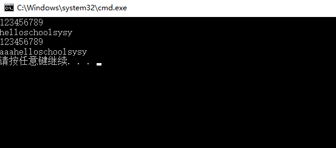
list
list就是链表，在C语言中我们想使用链表都是自己去实现的，实现起来倒不难，但是如果有现成的高效的链表可以使用的话，我们就不需要重复造轮子了。STL就提供了list容器给我们。
list是一个双向链表，而单链表对应的容器则是foward_list。
list即双向链表的优点是插入和删除元素都比较快捷，缺点是不能随机访问元素。
初始化方式就大同小异了，跟vector基本一样。要想用list先加个头文件list。
#include <list>
#include <iostream>
#include <list>
#include <string>
using namespace std;
template <typename T>
void showlist(list<T> v)
{
for (list<T>::iterator it = v.begin(); it != v.end(); it++)
{
cout << *it;
}
cout << endl;
}
int main()
{
list<int> l1{ 1,2,3,4,5,5,6,7,7 };
showlist(l1);
list<double> l2;
list<char> l3(10);
list<int> l4(5, 10); //将元素都初始化为10
showlist(l4);
system("pause");
return 0;
} 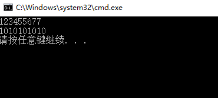
值得注意的是，list容器不能调用algorithm下的sort函数进行排序，因为sort函数要求容器必须可以随机存储，而list做不到。所以，list自己做了一个自己用的排序函数，用法如下：
list<int> l1{ 8,5,7,6,1,2,3,4,5,5,6,7,7 };
l1.sort();map
map运用了哈希表地址映射的思想，也就是key-value的思想，来实现的。
首先给出map最好用也最最常用的用法例子，就是用字符串作为key去查询操作对应的value。
要使用map得先加个头文件map。
#include <map>#include <iostream>
#include <map>
#include <string>
using namespace std;
void showmap(map<string, int> v)
{
for (map<string, int>::iterator it = v.begin(); it != v.end(); it++)
{
cout << it->first << " " << it->second << endl; //注意用法，不是用*it来访问了。first表示的是key，second存的是value
}
cout << endl;
}
int main()
{
map<string, int> m1; //<>里的第一个参数表示key的类型,第二个参数表示value的类型
m1["Kobe"] = 100;
m1["James"] = 99;
m1["Curry"] = 98;
string s("Jordan");
m1[s] = 90;
cout << m1["Kobe"] << endl;
cout << m1["Jordan"] << endl;
cout << m1["Durant"] << endl; //不存在这个key，就显示0
m1.erase("Curry");//通过关键字来删除
showmap(m1);
m1.insert(pair<string, int>("Harris", 89)); //也可以通过insert函数来实现增加元素
showmap(m1);
m1.clear(); //清空全部
system("pause");
return 0;
}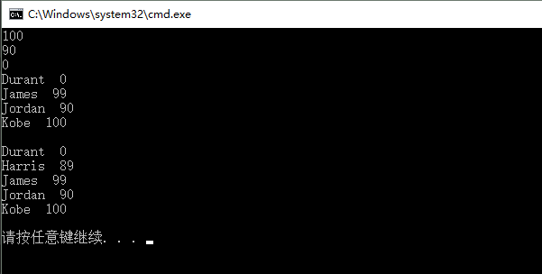
如果想看看某个存不存在某个key，可以用count来判断
if (m1.count("Lee"))
{
cout << "Lee is in m1!" << endl;
}
else
{
cout << "Lee do not exist!" << endl;
}用迭代器来访问元素
for (map<string, int>::iterator it = m1.begin(); it != m1.end(); it++)
{
cout << it->first<<" "<<it->second << endl; //注意用法，不是用*it来访问了。first表示的是key，second存的是value
}